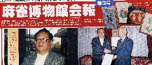
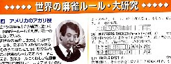

（55）アメリカ七対
チートイツの英語名は、Seven Pair か Seven Twins。変わったところでは Seven Eyes とかDirty Pairなんてのもある。
Dirty は一般に「汚い」と訳されるが、この場合は「いろいろな牌種が混在」という趣旨。そこで普通の七対子を Dirty Pairと呼称するときは、混一色の七対子を Clean Pair と表現する。となれば清一色の七対子はもちろんBeauty Pair、というのは大ウソ、この場合は Hevenly Pair と表現する。
とはいえこれらは単なる別名。アメリカ麻雀には、てんでんバラバラパート２で紹介したKnitting(ニッティング)のように、へんてこりんな七対子がいくつかある。
麻雀博物館は年に２回、博物館会報を刊行しているが、その第３号（02年１月）にそんな変則七対子が掲載（by佐藤孝平）されているので、紹介する。


Jade Pair
Jadeとは翡翠(ひすい)。翡翠はブルーというか緑の宝石。そこで緑一色の七対子を指す。しかし緑一色牌は６種類。そこでJadePairは１種類が必ず槓仔（４枚使い）となる。Ruby Pair
Ruby は赤色の宝石。そこでJadePairとは逆に,朱色が入った索子とのみを使用した七対子となる。ただしこっちは場に
Wind fall（風の滝）
例では筒子を使用したが、混一色の七対で風牌が各１枚そろっていればよい。
Dragons breath（竜の息吹）
こちらも例図では万子を使用したが、混一色の七対で三元牌が各１枚、そのうち１種が対子であればよい。